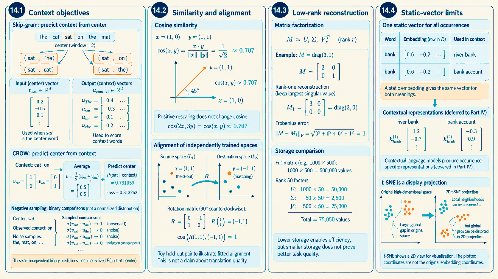
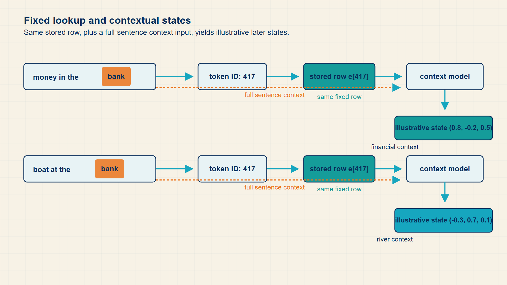

14 Word vectors from context
Token vectors need a context-prediction objective to acquire relationships that can be inspected and evaluated.
Lookup supplies a vector for each token, but it does not explain why any two vectors should resemble one another. Text can supply a learning signal through nearby words. A model can predict those contexts and adjust vectors to reduce prediction loss.

14.1 Center words, context targets, and sampled noise
A word’s repeated contexts can reveal how it is used. Words found in similar contexts often have related roles, even when they never appear beside each other. This distributional hypothesis motivates learning from surrounding text.1
To make the relationship explicit, assign one matrix row to each word and one column to each context. A corpus count can fill each entry with the number of times that word occurs in that context. Similar rows then mean similar observed usage patterns. The smaller example below uses illustrative compatibility judgments: one means that the word could fit the sentence template, and zero means that it does not fit under the example’s interpretation.
| Word or phrase | A bottle of … | Everyone likes … | … makes you drunk | We make … out of corn |
|---|---|---|---|---|
| tezguino | 1 | 1 | 1 | 1 |
| loud | 0 | 0 | 0 | 0 |
| motor oil | 1 | 0 | 0 | 1 |
| tortillas | 0 | 1 | 0 | 1 |
| wine | 1 | 1 | 1 | 0 |
The rows for tezguino and wine agree in three of four columns.2 Their shared patterns support a beverage-related interpretation, while the fourth context distinguishes them in this example. These bits are supplied judgments, not measured corpus frequencies. Similar contexts can also occur around antonyms, and one word can have several senses, so row similarity alone does not establish synonymy.
Storing a column for every context can be costly. Word prediction provides a way to fit smaller vectors from repeated observations without requiring a person to label every pair. Word2Vec learns one vector per word using prediction tasks constructed from those observations.
The word-prediction model uses two tables, each with one width-\(D\) row per vocabulary word. The input table supplies vectors \(v_c\) for center words. The output table supplies vectors \(u_o\) for words scored as possible contexts. These rows have different roles even when they refer to the same word.
Skip-gram predicts surrounding words from a center word. One normalized model assigns
\[ P(o\mid c)=\frac{\exp(u_o^{\top}v_c)}{\sum_{j\in V}\exp(u_j^{\top}v_c)} \tag{14.1}\]
The denominator sums over the vocabulary \(V\). For one observed center-context pair, training maximizes its log probability, \(\log P(o\mid c)\).
Across corpus positions \(t\) and their chosen context-position sets, this becomes
\[ \operatorname*{maximize}\;\sum_{t}\sum_{c\in\operatorname{context}(t)}\log P(x_{c}\mid x_{t}) \tag{14.2}\]
Here \(x_t\) is the center token and \(x_c\) a token at context position \(c\). Repeated pairs contribute repeatedly. The window, boundary handling, and any subsampling choices determine which observations enter the objective.
CBOW, continuous bag-of-words, reverses the prediction roles. It combines input-table vectors from surrounding words and predicts the center token using the output table:
\[ \operatorname*{maximize}\;\sum_{t}\log P(x_{t}\mid\operatorname{context}(t)) \tag{14.3}\]
For a mean-based CBOW example, the context vector is \(q=\sum_{c\in C}v_c/|C|\) with nonempty context \(C\). The scores are \(u_j^{\top}q\) for candidate center words \(j\). Summing instead of averaging is another convention, with a different scale.
Example: A CBOW aggregate and prediction
Choose two context vectors \((1,0)\) and \((0,1)\). Their mean is \(q=(0.5,0.5)\). In a two-candidate illustration, let the correct center’s output vector be \((2,0)\) and the other be \((0,0)\).
The logits are 1 and 0. The target probability is \(e/(e+1)\approx0.731059\), giving loss \(-\log(e/(e+1))\approx0.313262\).
Conclusion: CBOW combines several context inputs before making one center-word prediction. Its backward calculation reaches the target-scoring table and both contributing context rows. These are chosen vectors, not learned corpus measurements.
A full vocabulary denominator can be expensive. Hierarchical softmax places words at tree leaves. A word probability multiplies conditional branch probabilities along its path, scoring those branches rather than every vocabulary entry. This alternative scores internal tree-node vectors instead of the output-word rows used below. Negative sampling instead trains a binary distinction between observed pairs and pairs made by drawing words from a noise distribution.3
For center \(c\) and candidate \(o\), the discriminator score is \(D(c,o)=\sigma(u_o^{\top}v_c)\). It estimates the binary training label in that sampling task. Scores for all words need not sum to one. They are not the normalized \(P(o\mid c)\) above.
With \(K_{\mathrm{neg}}\) noise draws, the expected objective to maximize is
\[ \log\sigma(u_{o}^{\top}v_{c})+\sum_{k=1}^{K_{\mathrm{neg}}}\mathbb{E}_{n_{k}}\!\left[\log\sigma(-u_{n_{k}}^{\top}v_{c})\right] \tag{14.4}\]
The positive word is \(o\), and each \(n_k\) is drawn from the declared noise distribution. The expectation describes draws across possible samples. The original method used unigram frequencies raised to the three-quarter power and renormalized. That choice is a sampling design, not a definition of linguistic impossibility.
For realized draws with output vectors \(u_k\), the corresponding sampled loss to minimize is
\[ -\log\sigma(u_{o}^{\top}v_{c})-\sum_{k}\log\sigma(-u_{k}^{\top}v_{c}) \tag{14.5}\]
A negative sample has label zero because of its role in this sampled comparison. It may still be a plausible or observed context. Write \(s=u_o^{\top}v_c\) for an individual pair’s dot-product score. Applying §8.4’s binary logit derivative gives \(\sigma(s)-1\) for the positive score and \(\sigma(s)\) for the negative score. Local descent therefore raises a positive score and lowers a negative score, considered separately.
Example: Pairs and a possible noise collision
Take the token sequence The cat sat on the mat, with zero-based center index 2 selecting sat. A window of two positions on each side gives The, cat, on, and the.
The four observed pairs are (sat, The), (sat, cat), (sat, on), and (sat, the). For (sat, cat), suppose the noise draws are mat and on. The word on is also an observed context here. Its sampled role still gives that comparison a negative label.
Use \(v_{\mathrm{sat}}=(0.2,-0.5,0.8)\) and \(u_{\mathrm{cat}}=(0.1,0.4,-0.3)\). Their score is \(0.02-0.20-0.24=-0.42\), giving discriminator probability \(\sigma(-0.42)\approx0.397\).
The positive term favors raising this score. The two noise terms favor lowering \(u_{\mathrm{mat}}^{\top}v_{\mathrm{sat}}\) and \(u_{\mathrm{on}}^{\top}v_{\mathrm{sat}}\). Their scores depend on the two output vectors, which have no numerical values in this illustration.
Conclusion: The value 0.397 measures the sampled classifier’s current response, not a corpus frequency or normalized next-word probability. A word’s noise label does not assert that it cannot occur near the center.
Example: A complete one-negative loss
In a separate width-two example, use \(v_c=(1,0)\), \(u_o=(2,0)\), and \(u_n=(-1,0)\). The positive score is 2 and its sigmoid is approximately 0.881. The noise score is \(-1\) and its sigmoid approximately 0.269.
The loss is \(-\log\sigma(2)-\log\sigma(1)\approx0.126928+0.313262=0.440190\). The positive-score derivative is approximately \(-0.119203\), while the negative-score derivative is approximately \(0.268941\).
Conclusion: The two terms push their scores in opposite directions. Shared vector coordinates receive the combined derivatives, so one update need not improve every pair simultaneously. A dot-product change also does not directly specify a Euclidean-distance change.
Each sampled update touches the center input row and the positive and sampled output rows. For a batch, input IDs have shape \([B]\), noise IDs \([B,K_{\mathrm{neg}}]\), and selected vectors \([B,D]\) or \([B,K_{\mathrm{neg}},D]\). Gradient contributions add when rows repeat. The optimizer qualifications from §13.2 still apply.
The runnable gensim example trains Skip-gram on three tokenized sentences. Word2Vec constructs the training comparisons, and model.wv exposes the learned input vectors and inspection methods.4
Those inspection methods need a way to compare vectors. Cosine similarity compares the directions of two nonzero vectors: it is 1 for the same direction, 0 for perpendicular directions, and \(-1\) for opposite directions. A nearest neighbor is a candidate with the highest chosen similarity or lowest chosen distance to a query. Here the query methods rank words by cosine similarity. Section 14.2 develops the calculation and its limits.
Code example: Training and inspecting a small Word2Vec model
from gensim.models import Word2Vec
sentences = [
["cat", "sat", "mat"],
["dog", "sat", "rug"],
["cat", "chased", "dog"],
]
model = Word2Vec(
sentences,
vector_size=8,
window=2,
min_count=1,
sg=1,
epochs=100,
)
print(model.wv["cat"].shape)
print(model.wv.similarity("cat", "dog"))
print(model.wv.most_similar("cat", topn=2))The chosen settings are width 8, maximum context window 2, minimum count 1, and 100 epochs. The output includes shape (8,), one cosine similarity, and two neighbors of cat. Random initialization, training order, and the tiny corpus prevent treating those neighbors as reliable language evidence.
The code sets sg=1 for Skip-gram and min_count=1 so every token in the tiny supplied corpus receives a vector. In Word2Vec, min_count excludes rarer words from the learned vocabulary. An unknown-word vector requires a separately implemented mapping and training policy. Chapter 24’s execution guide records the different corpus, objective, and settings used by the downloadable embedding notebook.
14.2 Similarity, analogy, and bilingual coordinate alignment
A trained table can rank words against a query, but a numerical ranking needs an interpretation tied to its training data. For two nonzero vectors, cosine similarity is calculated as
\[ \cos(u,v)=\frac{u^{\top}v}{\lVert u\rVert_{2}\,\lVert v\rVert_{2}} \tag{14.6}\]
The denominator removes vector lengths. Zero vectors have no defined cosine and require an explicit rejection or fallback policy. A nearest-neighbor search ranks candidates using its declared similarity or distance.
For \((1,0)\) and \((1,1)\), the dot product is 1 and the norm product is \(\sqrt2\). Their cosine is \(1/\sqrt2\approx0.707\). Scaling the second vector by a positive constant leaves that result unchanged. It establishes directional similarity, not synonymy or calibrated semantic confidence.
For many candidates, normalized query and candidate vectors form a matrix multiplication producing one score per candidate. The highest score depends on the candidate vocabulary as well as the trained vectors.
Analogy queries combine vectors, for example king - man + woman, and retrieve a neighbor. In Gensim 4.4.0, most_similar normalizes each vector selected by a word key before forming the weighted mean. It then normalizes the combined query and compares it with candidate directions. Consequently, the expression describes contributions of word directions rather than subtraction of the original vectors with their unequal lengths.5 Some trained spaces return queen. This is an empirical relationship, not universal meaning algebra. Corpus, vocabulary, multiple senses, and training settings can change the result.
Fixed-table similarity and analogy queries change the query vector while leaving the table fixed. None of these operations computes a representation for a particular sentence occurrence. Chapter 24’s execution guide records the specific inspection queries supplied by the embedding notebook.
Vectors trained independently in two languages need not share coordinate axes. Direct cosine comparison can fail even when each space has useful internal relationships. Bilingual alignment fits a map from paired source-language vectors to their translation vectors.6
For source columns \(x_i\) and destination columns \(y_i\), a linear map \(A\) minimizes \(\sum_i\|Ax_i-y_i\|_2^2\) on seed translation pairs. A new source vector is mapped with \(A\), then compared with destination candidates by cosine. Translation pairs held aside from fitting test whether the map extends beyond its seeds.
Example: A coordinate map before retrieval
Suppose seed pairs match \((1,0)\) to \((0,1)\) and \((0,1)\) to \((-1,0)\). The map \(A=\begin{bmatrix}0&-1\\1&0\end{bmatrix}\) fits both exactly.
A held-out source vector \((1,1)\) maps to \((-1,1)\). Its cosine with destination candidate \((-1,1)\) is 1. Its cosine with competing candidate \((1,1)\) is 0. Before mapping, those two candidate scores would be reversed.
Conclusion: The seed pairs supply correspondence that the original coordinate axes did not provide. Mapping changes the retrieval decision in this example. This chosen rotation demonstrates the mechanism. Real translation quality requires many held-out pairs and a declared candidate set.
Seed errors, unequal language coverage, and a poor linear fit can limit alignment. More compact vectors pose another question: which relationships survive when fewer coordinates reconstruct the data?
14.3 Reconstruction with fewer coordinates
The word-context matrix introduced in §14.1 can contain far more stored entries than a downstream task can afford. Compression replaces it with factors whose product approximates those entries. The saved storage must be weighed against reconstruction error and task performance.
Rank counts independent directions in a matrix. Singular value decomposition, abbreviated SVD, separates a matrix into left directions, nonnegative singular values, and right directions. Retaining \(r\) directions gives a low-rank approximation:
\[ M\approx U_{r}\Sigma_{r}V_{r}^{\top} \tag{14.7}\]
For \(M\) of shape \([m,n]\), \(U_r\) has shape \([m,r]\), \(\Sigma_r\) shape \([r,r]\), and \(V_r\) shape \([n,r]\). Thus \(V_r^{\top}\) has shape \([r,n]\). The columns of each direction matrix are orthonormal: each has length one, and distinct columns have dot product zero. The singular values scale paired left and right directions, ordered from largest to smallest.
Retaining \(r\) singular directions limits the reconstructed matrix to rank at most \(r\). Direction \(k\) contributes \(\sigma_k u_kv_k^{\top}\), where \(u_k\) and \(v_k\) are the corresponding columns of the left and right factors. The Frobenius norm is the square root of the sum of all squared matrix entries. Among matrices of rank at most \(r\), the truncated SVD minimizes Frobenius reconstruction error. Its minimum error is \(\sqrt{\sum_{k>r}\sigma_k^2}\).7 Discarded directions contribute exactly those omitted squared singular values.
Why can no other rank-\(r\) approximation do better? Let \(A\) be any matrix of rank at most \(r\), and let \(P\) project each column onto the subspace spanned by \(A\)’s columns. This orthogonal projection retains the part within that subspace and removes its perpendicular part. Since \(PA=A\), write the error as \(M-A=(I-P)M+(PM-A)\). The two parts are perpendicular column by column, so their squared Frobenius norms add. Every candidate’s squared error is therefore at least \(\|(I-P)M\|_F^2=\|M\|_F^2-\|PM\|_F^2\).
The SVD gives \(\|PM\|_F^2=\sum_k\sigma_k^2\|Pu_k\|_2^2\). Each weight \(\|Pu_k\|_2^2\) lies between zero and one. Their sum is at most \(r\). An orthonormal basis of the retained subspace has at most \(r\) unit vectors. Each basis vector contributes at most one unit of total squared projection across the orthonormal \(u_k\), so their combined contribution cannot exceed \(r\). With descending singular values, these weights can capture at most \(\sum_{k\le r}\sigma_k^2\): assigning the available weight to the largest values maximizes the sum. Thus every candidate has squared error at least \(\sum_{k>r}\sigma_k^2\). The truncated SVD attains that bound, establishing its optimality.
Row \(i\) of \(U_r\Sigma_r\) supplies a length-\(r\) representation. Multiplication by \(V_r^{\top}\) reconstructs its length-\(n\) row. Rows of \(U_r\) alone provide another embedding convention. Multiplying by \(\Sigma_r\) rescales the coordinates, so similarity comparisons must use the same convention.
Example: Reconstruction and storage
For \(M=\begin{bmatrix}3&0\\0&1\end{bmatrix}\), the coordinate directions are singular directions with singular values 3 and 1. Keeping only the first gives \(M_1=\begin{bmatrix}3&0\\0&0\end{bmatrix}\).
The error \(M-M_1\) has one nonzero entry, equal to 1. Its Frobenius norm is therefore \(\sqrt{1^2}=1\). This also equals \(\sqrt{\sigma_2^2}\), the optimal rank-one error from the omitted singular value. The first direction is retained exactly, while the second is lost.
Separately, a 1,000-by-500 matrix contains 500,000 values. At rank 50, \(U_r\) stores 50,000 values, the diagonal stores 50, and \(V_r^{\top}\) stores 25,000. The total is 75,050.
Conclusion: Factor storage is smaller when \(r\) is sufficiently below both matrix dimensions. The arithmetic saving alone does not establish acceptable reconstruction or downstream prediction quality.
An autoencoder consists of an encoder and a decoder trained to reconstruct an input through a constrained intermediate representation. The encoder maps \(x\) to a code \(h\). The decoder maps \(h\) to reconstruction \(\hat x\). A reconstruction loss supplies gradients to both parameter sets.
For a chosen example, an encoder keeping only the first coordinate maps \((3,1)\) to code 3. A decoder returning \((h,0)\) reconstructs \((3,0)\), with squared error 1. This isolates the information lost through the bottleneck, not a measured training outcome.
A nonlinear autoencoder can learn mappings beyond a fixed linear projection. Its reconstruction objective differs from Word2Vec’s context-prediction objective. Neither compressed storage nor accurate reconstruction by itself resolves a word’s context-dependent meaning.
14.4 Static vectors and inspection limits
The word bank can occur in river bank and bank account, yet both occurrences select the same table row. A static embedding is unchanged across occurrences of its token type once the table is fixed.
A contextual representation also depends on the available surrounding sequence. A sequence model computes it from token vectors and permitted context. Its hidden state is an internal representation carrying information through that computation.
The figure contrasts the shared table row for bank with a representation that changes with surrounding text.

Static-vector inspection can reveal relationships in trained vectors. The next queries treat model names as vocabulary strings. They compare the word vectors associated with those strings, rather than running or comparing the models themselves. The results concern how the training text used the names. In one recorded run, odd-one-out queries over lstm cnn gru svm transformer, bert word2vec gpt-2 roberta xlnet, and word2vec bert glove fasttext elmo return svm, word2vec, and bert. Another model or the local three-sentence example may return different neighbors.
model.wv.doesnt_match asks which supplied vector is least compatible with the group under its similarity calculation. The apparent category distinction requires separate interpretation of the tokens. A different corpus or missing vocabulary entries can change or prevent the result.
To inspect many vectors visually, t-SNE places points in a lower-dimensional display. The name abbreviates t-distributed stochastic neighbor embedding. Its objective favors preserving local similarity relationships.8 Its plotted coordinates are not the original embedding coordinates. Global distances, cluster areas, and gaps can be distorted.
For a visualization, select 200 neighbors of bert and then include bert itself, giving 201 vector rows, and map their vectors to two dimensions using cosine distance and PCA initialization. PCA, principal component analysis, chooses orthogonal directions of greatest sample variance for a linear projection. Here that projection only initializes the nonlinear display.
The word list and vector rows must remain aligned. With the numerical array library NumPy imported as np, np.stack([model.wv[w] for w in selected_words]) creates one row per selected word in the same order. The list already contains bert, so these 201 rows match its 201 labels.
Before projection, check vocabulary membership, row count and finite nonzero vectors for cosine distance. Record the exact query, selected words, returned tokens, original-space similarities, vocabulary, fixed model version, projection settings, and seed. For the explicit toy vectors in §14.2, cosine 0.707 follows from their coordinates. That separate calculation checks the similarity rule. To judge a plotted word pair, compare its displayed gap with the similarity calculated from that pair’s original vectors. Changing a projection seed can change the display without changing the trained table.
The inspection can test the fixed table, but it cannot tell how the same token changes meaning across occurrences. That question requires surrounding text to enter the representation calculation. Chapter 15 introduces a sequence mechanism for doing so.
Chapter checkpoint
If on is an observed neighbor of sat, can it also occur as a noise draw? Does a close pair in a t-SNE plot prove high original-space cosine similarity?
Answer: A noise draw is determined by the sampling distribution, so an observed context can receive a sampled negative label. That label does not mean linguistic impossibility. A projection can distort relationships, so the original vectors and similarity values must be checked separately.
In CBOW and Skip-gram, which object supplies the input and which supplies the target? If a rank-\(r\) reconstruction discards a singular direction, what evidence is needed before claiming the smaller representation is adequate?
Answer: CBOW uses surrounding context to predict the center word. Skip-gram uses the center word to predict surrounding words. A discarded direction contributes reconstruction error according to its singular value, but adequacy still requires a held-out task or retrieval criterion using the retained representation.
Harris, Z. S. (1954). Distributional Structure. WORD, 10(2–3), 146–162. This is historical support, not a claim that one publication solely originated the idea.↩︎
The illustrative table follows Jacob Eisenstein’s Natural Language Processing notes, Chapter 14, pages 325–326, draft of November 13, 2018. The tezgüino context example appears in Dekang Lin (1998), Automatic Retrieval and Clustering of Similar Words, 36th Annual Meeting of the Association for Computational Linguistics and 17th International Conference on Computational Linguistics, Volume 2, 768–774. Lin credits Nida (1975) for the underlying example. The binary compatibility entries here remain illustrative judgments.↩︎
Mikolov, T., Sutskever, I., Chen, K., Corrado, G. S., & Dean, J. (2013). Distributed representations of words and phrases and their compositionality. Advances in Neural Information Processing Systems, 26.↩︎
Gensim Contributors. (2025). Word2Vec implementation. Gensim 4.4.0 source.↩︎
Gensim Contributors. (2025). Keyed vector queries. Gensim 4.4.0 source,
get_mean_vectorandmost_similar.↩︎Mikolov, T., Le, Q. V., & Sutskever, I. (2013). Exploiting similarities among languages for machine translation. arXiv:1309.4168.↩︎
Eckart, C., & Young, G. (1936). The approximation of one matrix by another of lower rank. Psychometrika, 1(3), 211–218. The optimality claim here concerns unconstrained approximation in the Frobenius norm.↩︎
van der Maaten, L., & Hinton, G. (2008). Visualizing data using t-SNE. Journal of Machine Learning Research, 9, 2579–2605.↩︎